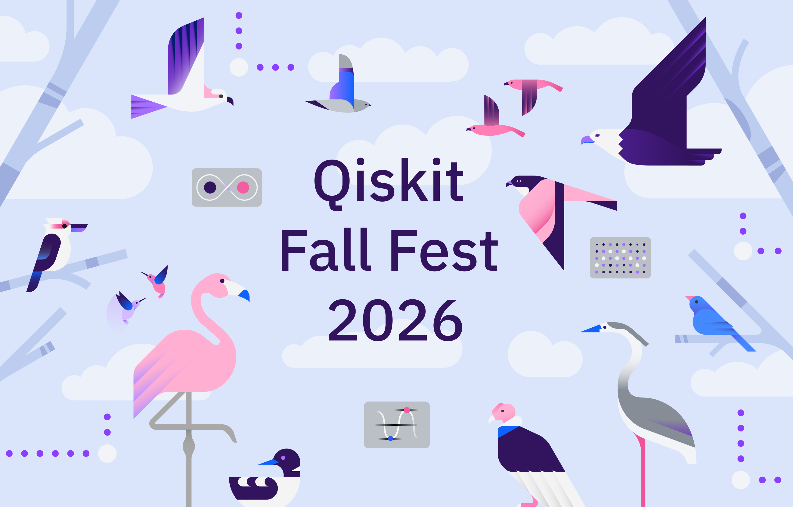

Welcome to the quantum realm. If you are used to the classical computing world of absolute zeros and ones, prepare for your intuition to decohere just a bit upon entry.
The IBM Quantum Qiskit Fall Fest at the University of Uyo is your safe space to step into the weird, fascinating universe of quantum technology. We are not here to make magical promises about the future; we are here to explore how nature actually computes at the fundamental level. Whether you are a seasoned student or someone whose probability of asking "What is a qubit?" currently approaches 1, this event is built for you. We will entangle ideas, transpile your curiosity into real code, and prove that quantum mechanics is something you can build with today. Your probability of leaving without loving quantum computing approaches 0.
Quantum computing represents the next major paradigm shift in computational science. The Fall Fest at the University of Uyo is designed to bridge the gap between theoretical physics and applied quantum algorithms.
Whether you are a postgraduate researcher, faculty member, or industry professional, this event provides the advanced resources to translate classical expertise into quantum utility. Engage with cutting-edge state mechanics, Python structural programming, and algorithmic implementation using the Qiskit framework to advance Nigeria’s footprint in the global quantum ecosystem.
University of Uyo — Main Campus Gate
Think of this as your quantum boot camp. We are taking the heavy math and physics and diagonalizing the confusion so you can build a solid foundation before the main event kicks off.
This is where your new skills collapse into reality. Aligning with IBM Quantum Qiskit's global mission, this hybrid event focuses on taking your foundational theory and running it on actual quantum frameworks.
Space for the physical workshops is highly limited.